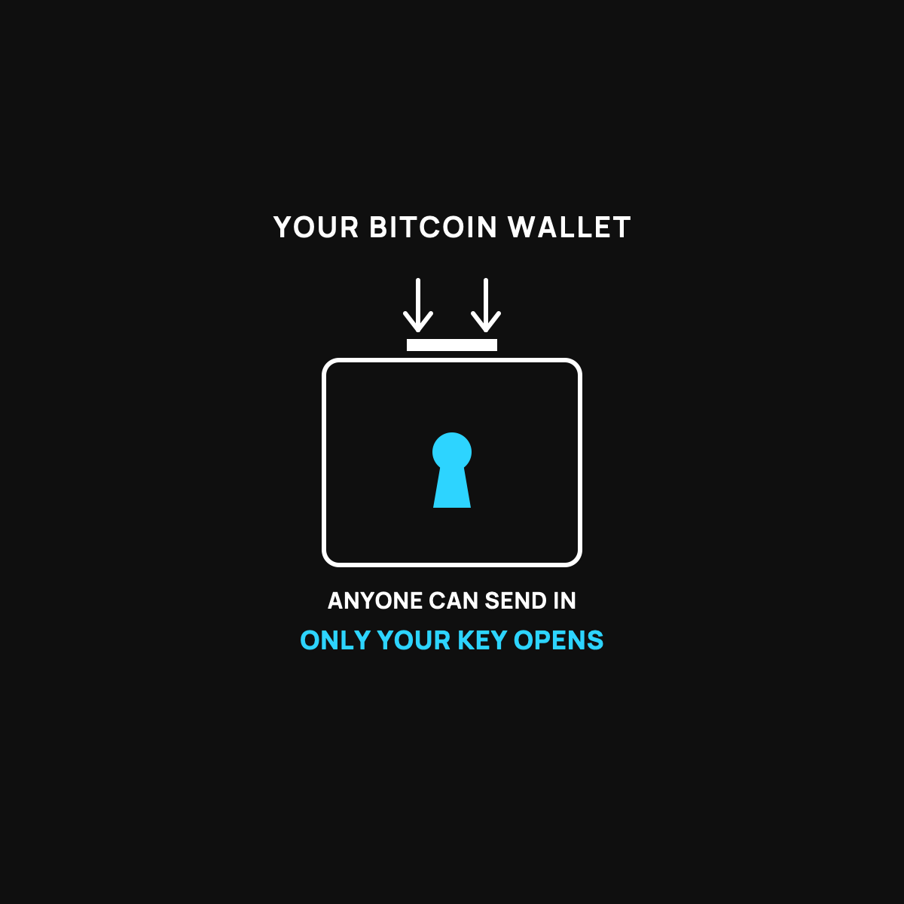

What a Bitcoin Wallet Actually Is
It's a mailbox, not a coin purse. Here's what that changes.
A bitcoin wallet is a mailbox, not a coin purse. The address is the slot anyone can drop mail into, so share it freely. The key is the door only you should open. The coins themselves live on a shared public record, and the wallet just holds the key that proves they're yours.

The word "wallet" throws people off. A bitcoin wallet is not a little pouch with your coins inside it. Nothing is actually stored in it the way cash sits in your back pocket. Once you get what a wallet really is, a lot of the confusing bitcoin stuff clicks into place. Here's the plain version.
A mailbox on the street
Picture an old-fashioned mailbox, the kind on a post out front. It's got a slot on top where anyone can drop a letter in. And it's got a little door on the front that only opens with your key.
That's a bitcoin wallet. The slot is your address, a public string of characters you can hand to anybody so they can send you bitcoin. Give it out freely. That's how people pay you, like handing out your mailing address.
The locked door is your key, the secret code that lets you open the box and take what's inside. That part you never share with anyone, ever. Whoever has the key can empty the mailbox.
So where are the coins?
Here's the mind-bender. The coins aren't "in" the wallet at all. They live on a giant shared record that everybody in the bitcoin network keeps, a kind of public ledger that says who owns what. Your wallet doesn't hold coins. It holds the key that proves which coins on that record are yours and lets you move them.
So a wallet is really a keychain, not a coin purse. That sounds like a small thing, but it's the whole idea. You're not guarding a pouch of coins. You're guarding a key.
Two flavors of wallet
There are two broad kinds, and the difference is just where your key lives.
A wallet on an app or website, where the company holds the key for you, is the easy one. It's like letting the post office keep your mailbox key. Convenient, but you're trusting them with it. That's the exact situation behind the phrase "not your keys, not your coins," which I unpacked in not your keys, what it means.
A wallet where you hold the key yourself, on your own device or a little dedicated gadget, gives you full control. No company can freeze it or lose it for you. The catch is there's no one to call if you lose the key, so it's on you to keep it safe.
Which one should you start with?
For a beginner with a small amount, an app where the company holds the key is a perfectly reasonable place to start. Simple is good when you're learning. If you haven't taken the first step at all, I walked through the first step. As your amount grows into money you'd hate to lose, that's the time to graduate to holding your own key.
The takeaway
A bitcoin wallet is a mailbox, not a coin purse. The address is the slot anyone can drop mail into, so share it freely. The key is the door only you should open, so guard it with your life. The coins live on a shared public record, and the wallet just holds the key that proves they're yours. Get that, and bitcoin stops feeling like magic and starts feeling like a locked mailbox.
Questions I get about this
What's the difference between a bitcoin address and a key?
The address is public. Hand it to anyone so they can send you bitcoin, like a mailing address. The key is the secret that opens the box and moves the coins. Share the address, never the key.
What's the difference between a custodial wallet and holding my own keys?
A wallet on an app where the company holds the key is like letting the post office keep your mailbox key: convenient, but you're trusting them. Holding the key yourself, on your own device or a small dedicated gadget, means full control and no one to call if you lose it. The phrase for this is "not your keys, not your coins".
Which wallet should a beginner use?
For a small amount, an app where the company holds the key is a reasonable start. Simple is good when you're learning. As your amount grows into money you'd hate to lose, that's the time to graduate to holding your own key.

Written by David Dewese
Normal guy with a full-time job, wife, and kids. Spent twenty years pursuing music and creative ventures before starting a family. Sharing tips and tricks on how to thrive while living on an artist's income. Not a financial advisor. More about me.
New here?
Normaltown USA is plain-English money and healthcare help for normal people, written by a regular guy with a family of four. No jargon, no hype. Start here, or read the FAQ.